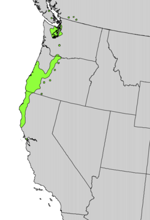

PACIFIC RHODODENDRON
Rhododendron macrophyllum

The State Flower of Washington
Rhododendron macrophyllum
The State Flower of Washington
Rhododendron macrophyllum, meaning rose tree, is a large flowering shrub that can range from 2 to 9 meters tall. Its leathery leaves can extend 3 to 9 inches long and 1 to 3 inches wide. Uniquely, this plant grows taller in the shade rather than direct sunlight.
The pacific rhododendron, (also called the California rose bay, California rhododendron, coast rhododendron or big leaf rhododendron) is an evergreen plant, meaning that it retains its leaves during the fall and winter seasons. Its flowers are typically pink, but other morphs do exist.
Rhododendron macrophyllum is found exclusively in the Pacfic Northwest, typically within the mountainous regions and along the coastlines. Its range extends as far south as Monterey Bay, California, and as far north as southern British Columbia.

Rhododendron macrophyllum is a hardy plant, thriving in disturbed enviroments such as roadsides or recently deforested woodland. It prefers more acidic soil with a low nitrogen content.
This plant can be found from as low as sea level to as high has 6000 feet in elevation.